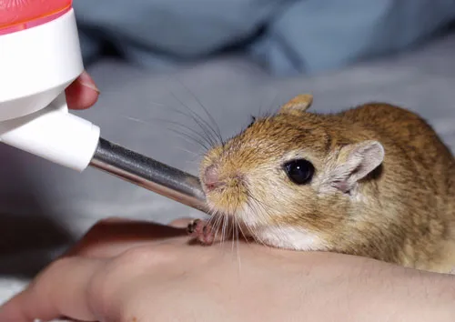
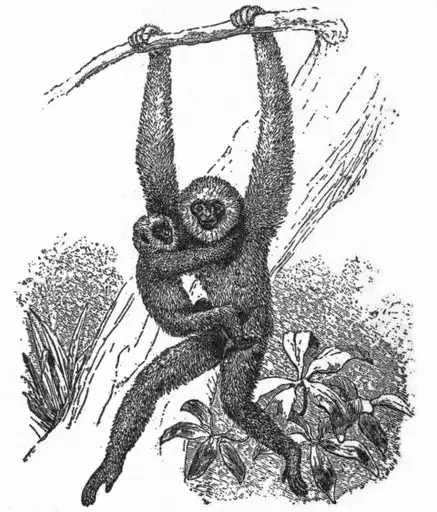
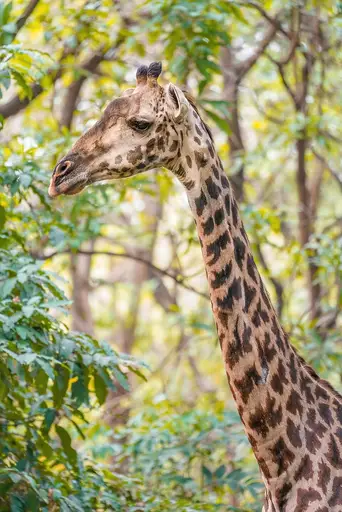
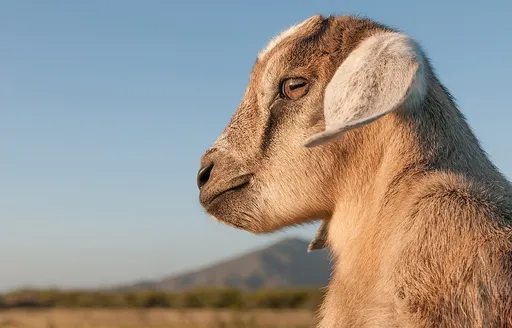

Reject an image by adding its slug to public/charades/charades-animals/reject.txt (append ! to keep it word-only), then re-run node scripts/genimages.mjs.

Gerbil gerbil CC BY 2.5 · User Big brother914 on ja.wikipedia · source

Gibbon gibbon Public domain · AnonymousUnknown author · source

Giraffe giraffe CC BY-SA 4.0 · Giles Laurent · sourceGnat gnat Public domain · MKFI · source

Goat goat CC BY-SA 3.0 · Béria Lima de Rodríguez · source